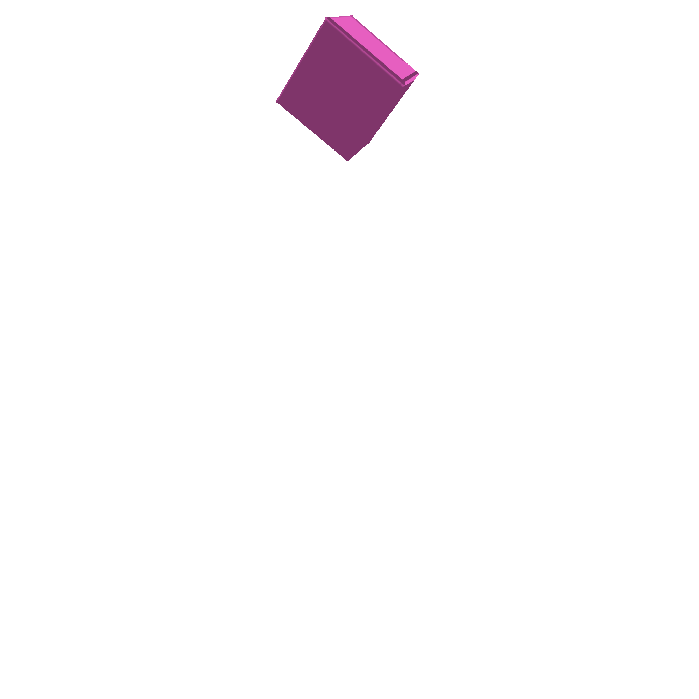
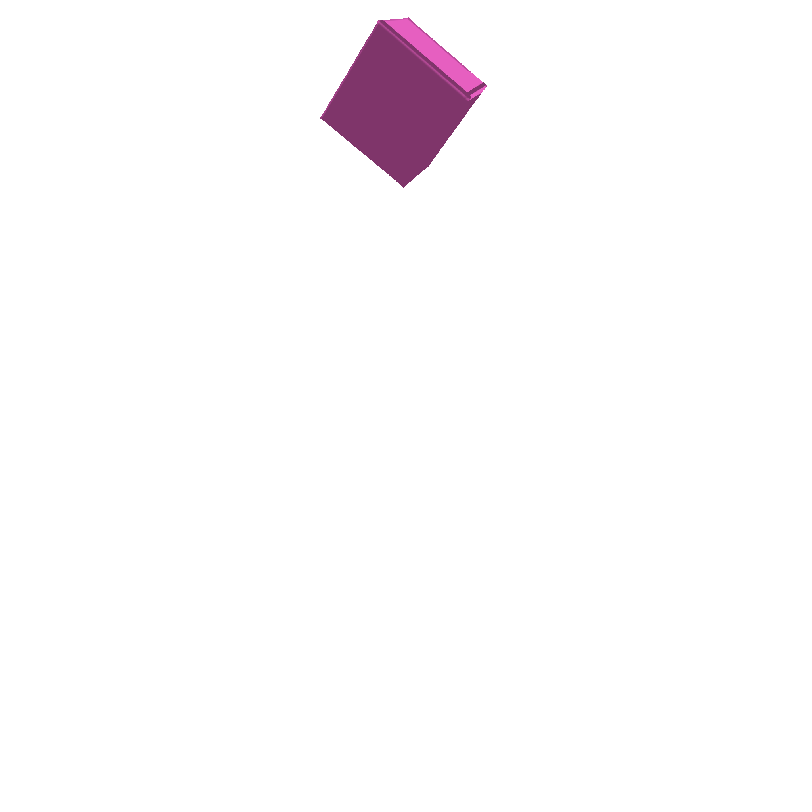

gradSim: Differentiable simulation for
system identification and visuomotor control

scroll down
We consider the problem of estimating an object's physical properties such as mass, friction, and elasticity directly from video sequences. Such a system identification problem is fundamentally ill-posed due to the loss of information during image formation. Current solutions require precise 3D labels which are labor-intensive to gather, and infeasible to create for many systems such as deformable solids or cloth. We present gradSim, a framework that overcomes the dependence on 3D supervision by leveraging differentiable multiphysics simulation and differentiable rendering to jointly model the evolution of scene dynamics and image formation. This novel combination enables backpropagation from pixels in a video sequence through to the underlying physical attributes that generated them. Moreover, our unified computation graph -- spanning from the dynamics and through the rendering process -- enables learning in challenging visuomotor control tasks, without relying on state-based (3D) supervision, while obtaining performance competitive to or better than techniques that rely on precise 3D labels.
Accurately predicting the dynamics and physical characteristics of objects from image sequences is a long-standing challenge in computer vision. This end-to-end reasoning task requires a fundamental understanding of both the underlying scene dynamics and the imaging process. Imagine watching a short video of a basketball bouncing off the ground and ask: "Can we infer the mass and elasticity of the ball, predict its trajectory, and make informed decisions, e.g., how to pass and shoot?" These seemingly simple questions are extremely challenging to answer even for modern computer vision models. The underlying physical attributes of objects and the system dynamics need to be modeled and estimated, all while accounting for the loss of information during 3D to 2D image formation.
Depending on the assumptions on the scene structre and dynamics, three types of solutions exist: black, grey, or white box. Black box methods
We eliminate the dependence of white box dynamics methods on 3D supervision by coupling explicit (and differentiable) models of scene dynamics with image formation (rendering). (Dynamics refers to the laws governing the motion and deformation of objects over time. Rendering refers to the interaction of these scene elements -- including their material properties -- with scene lighting to form image sequences as observed by a virtual camera. Simulation refers to a unified treatment of these two processes.)
Explicitly modeling the end-to-end dynamics and image formation underlying video observations is challenging, even with access to the full system state. This problem has been treated in the vision, graphics, and physics communities
We present gradSim, a versatile end-to-end differentiable simulator that adopts a holistic, unified view of differentiable dynamics and image formation (see Fig. 1, Fig. 2). Existing differentiable physics engines only model time-varying dynamics and require supervision in state space (usually 3D tracking). We additionally model a differentiable image formation process, thus only requiring target information specified in image space. This enables us to backpropagate
Our main contributions are:
We evaluate gradSim's effectiveness on parameter identification tasks for rigid, deformable and thin-shell bodies, and demonstrate performance that is competitive, or in some cases superior, to current physics-only differentiable simulators. Additionally, we demonstrate the effectiveness of the gradients provided by gradSim on challenging visuomotor control tasks involving deformable solids and cloth.
Typically, physics estimation and rendering have been treated as disjoint, mutually exclusive tasks. In this work, we take on a unified view of \emph{simulation} in general, to compose physics estimation \emph{and} rendering. Formally, simulation is a function
.
Here is a vector representing the simulation state and parameters (objects, their physical properties, their geometries, etc.), denotes the time of simulation. Given initial conditions , the simulation function produces an image of height and width at each timestep . If this function were differentiable, then the gradient of with respect to the simulation parameters provides the change in the output of the simulation from to due to an infinitesimal perturbation of by . This construct enables a gradient-based optimizer to estimate physical parameters from video, by defining a loss function over the image space , and descending this loss landscape along a direction parallel to .To realise this, we turn to the paradigms of computational graphs and differentiable programming.
gradSim comprises two main components: a differentiable physics engine that computes the physical states of the scene at each time instant, and a differentiable renderer that renders the scene to a 2D image. Contrary to existing differentiable physics
Under Lagrangian mechanics, the state of a physical system can be described in terms of generalized coordinates , generalized velocities , and design/model parameters . For the purpose of exposition, we make no distinction between rigid bodies, or deformable solids, or thin-shell models of cloth, etc. Although the specific choices of coordinates and parameters vary, the simulation procedure is virtually unchanged. We denote the combined state vector by .
The dynamic evolution of the system is governed by second order differential equations (ODEs) of the form , where is a mass matrix that depends on the state and parameters. The forces on the system may be parameterized by design parameters (e.g. Young's modulus). Solutions to these ODEs may be obtained through black box numerical integration methods, and their derivatives calculated through the continuous adjoint method
Gradients through this dynamical system can be computed by graph-based autodiff frameworks
A renderer expects a scene description as input and generates color images as output, all according to a sequence of image formation stages defined by the forward graphics pipeline. The scene description includes a complete geometric descriptor of scene elements, their associated material/reflectance properties, light source definitions, and virtual camera parameters. The rendering process is not generally differentiable, as visibility and occlusion events introduce discontinuities. Most interactive renderers, such as those used in real-time applications, employ a rasterization process to project 3D geometric primitives onto 2D pixel coordinates, resolving these visibility events with non-differentiable operations.
Our experiments employ two differentiable alternatives to traditional rasterization, SoftRas
gradSim performs differentiable physics simulation and rendering at independent and adjustable rates, allowing us to trade computation for accuracy by rendering fewer frames than dynamics updates.
We conducted multiple experiments to test the efficacy of gradSim on physical parameter identification from video and visuomotor control, to address the following questions:
Each of our experiments comprises an environment that applies a particular set of physical forces and/or constraints, a (differentiable) loss function that implicitly specifies an objective, and an initial guess of the physical state of the simulation. The goal is to recover optimal physics parameters that minimize , by backpropagating through the simulator.
First, we assess the capabilities of gradSim to accurately identify a variety of physical attributes such as mass, friction, and elasticity from image/video observations. To the best of our knowledge, gradSim is the first study to jointly infer such fine-grained parameters from video observations. We also implement a set of competitive baselines that use strictly more information on the task.
Our first environment--rigid--evaluates the accuracy of estimating of physical and material attributes of rigid objects from videos. We curate a dataset of simulated videos generated from variations of objects, comprising primitive shapes such as boxes, cones, cylinders, as well as non-convex shapes from ShapeNet
| Approach | Mean abs. err. (kg) | Abs. rel. err. |
|---|---|---|
| Average | 0.2022 | 0.1031 |
| Random | 0.2653 | 0.1344 |
| ConvLSTM |
0.1347 | 0.0094 |
| PyBullet + REINFORCE |
0.0928 | 0.3668 |
| DiffPhysics (3D Supervsion) | 1.35e-9 | 5.17e-9 |
| gradSim (Ours) | 2.36e-5 | 9.01e-5 |
Table 1 shows the results for predicting the mass of an object from video, with a known impulse applied to it. We use EfficientNet (B0)
To investigate whether analytical differentiability is required, our PyBullet + REINFORCE baseline applies black-box gradient estimation
| Approach | mass | elasticity () | elasticity () | friction () | friction () |
|---|---|---|---|---|---|
| Average | 1.771 | 3.715 | 2.341 | 4.116 | 0.446 |
| Random | 10.001 | 4.180 | 2.545 | 5.024 | 0.556 |
| ConvLSTM |
0.029 | 0.140 | 0.140 | 0.170 | 0.096 |
| DiffPhysics (3D Supervsion) | 1.70e-8 | 0.036 | 0.002 | 0.001 | 0.011 |
| gradSim (Ours) | 2.87e-4 | 0.400 | 0.003 | 0.001 | 0.007 |
 

We conduct a series of experiments to investigate the ability of gradSim to recover physical parameters of deformable solids and thin-shell solids (cloth). Our physical model is parameterized by the per-particle mass, and Lame elasticity parameters, as described in the Appendix. Fig. 4 illustrates the recovery of the elasticity parameters of a beam hanging under gravity by matching the deformation given by an input video sequence. We found our method is able to accurately recover the parameters of instances of deformable objects (cloth, balls, beams) as reported in Table 3 and Fig. 3. The animation in Fig. 6 better illustrates the accuracy in material parameter estimation achieved by gradSim.
| Approach | Deformable solid - mass | Material parameter | Material parameter | Cloth - per-particle velocity |
|---|---|---|---|---|
| DiffPhysics (3D Supervsion) | 0.032 | 0.0025 | 0.0024 | 0.127 |
| gradSim (Ours) | 0.048 | 0.0054 | 0.0056 | 0.026 |
To investigate whether the gradients computed by gradSim are meaningful for vision-based tasks, we conduct a range of visuomotor control experiments involving the actuation of deformable objects towards a *visual target pose (a single image). In all cases, we evaluate against DiffPhysics, which uses a goal specification and a reward, both defined over the 3D state-space. See Fig. 7 for a summary of the experiments.
The first example (control-walker) involves a 2D walker model. Our goal is to train a neural network (NN) control policy to actuate the walker to reach a target pose on the right-hand side of an image. Our NN consists of one fully connected layer and a \textnormal{tanh}() activation. The network input is a set of time-varying sinusoidal signals, and the output is a scalar activation value per-tetrahedron. gradSim is able to \emph{solve} this environment within three iterations of gradient descent, by minimizing a pixelwise MSE between the last frame of the rendered video and the goal image as shown in Fig. 7 (lower left), and more descriptively in Fig. 8.
In our second test, we formulate a more challenging 3D control problem (control-fem) where the goal is to actuate a soft-body FEM object (a gear) consisting of tetrahedral elements to move to a target position as shown in Fig. 7 (center) and in Fig. 9. We use the same NN architecture as in the 2D walker example, and use the Adam
Differentiable physics simulators have seen significant attention and activity, with efforts centered around embedding physics structure into autodifferentiation frameworks. This has enabled differentiation through contact and friction models
Recent work on physics-based deep learning injects structure in the latent space of the dynamics using Lagrangian and Hamiltonian operators
Sensor readings have been used to predicting the effects of forces applied to an object in models of learned
There is a rich literature on neural image synthesis, but we focus on methods that model the 3D scene structure, including voxels
Differentiable rendering allows for image gradients to be computed w.r.t. the scene geometry, camera, and lighting inputs. Variants based on the rasterization paradigm (NMR
We presented gradSim, a versatile differentiable simulator that enables system identification from videos by differentiating through physical processes governing dyanmics and image formation. We demonstrated the benefits of such a holistic approach by estimating physical attributes for time-evolving scenes with complex dynamics and deformations, all from raw video observations. We also demonstrated the applicability of this efficient and accurate estimation scheme on end-to-end visuomotor control tasks. The latter case highlights gradSim's efficient integration with PyTorch, facilitating interoperability with existing machine learning modules. Interesting avenues for future work include extending our differentiable simulation to contact-rich motion, articulated bodies and higher-fidelity physically-based renderers -- doing so takes us closer to operating in the real-world.
KM and LP thank the IVADO fundamental research project grant for funding. FG thanks CIFAR for project funding under the Catalyst program. FS and LP acknowledge partial support from NSERC.
This webpage theme was stolen from the learning-from-play homepage, which in-turn was based on the Distill template.
For attribution in academic contexts, please cite this work as
Jatavallabhula and Macklin et al., "gradSim: Differentiable simulation for system identification and visuomotor control", ICLR 2021.
BibTeX citation
@article{gradsim,
title = {gradSim: Differentiable simulation for system identification and visuomotor control},
author = {Krishna Murthy Jatavallabhula and Miles Macklin and Florian Golemo and Vikram Voleti and Linda Petrini and Martin Weiss and Breandan Considine and Jerome Parent-Levesque and Kevin Xie and Kenny Erleben and Liam Paull and Florian Shkurti and Derek Nowrouzezahrai and Sanja Fidler},
journal = {International Conference on Learning Representations (ICLR)},
year = {2021},
url = {https://openreview.net/forum?id=c_E8kFWfhp0},
pdf = {https://openreview.net/pdf?id=c_E8kFWfhp0},
}